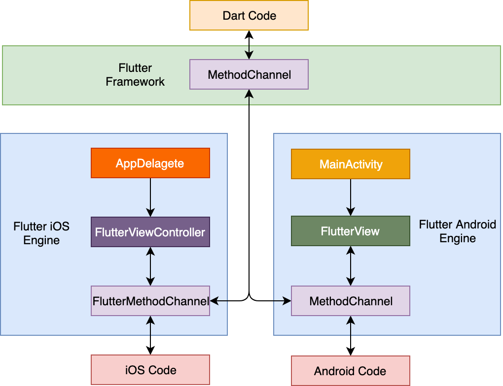
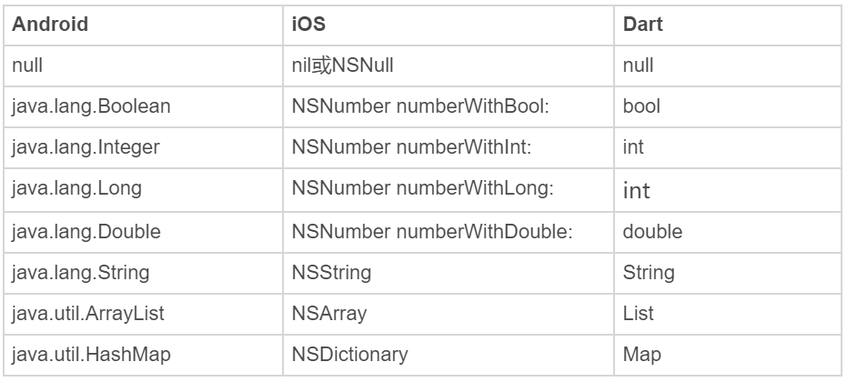

- 00 开篇词 为什么每一位大前端从业者都应该学习Flutter？.md.html
- 01 预习篇 · 从0开始搭建Flutter工程环境.md.html
- 02 预习篇 · Dart语言概览.md.html
- 03 深入理解跨平台方案的历史发展逻辑.md.html
- 04 Flutter区别于其他方案的关键技术是什么？.md.html
- 05 从标准模板入手，体会Flutter代码是如何运行在原生系统上的.md.html
- 06 基础语法与类型变量：Dart是如何表示信息的？.md.html
- 07 函数、类与运算符：Dart是如何处理信息的？.md.html
- 08 综合案例：掌握Dart核心特性.md.html
- 09 Widget，构建Flutter界面的基石.md.html
- 10 Widget中的State到底是什么？.md.html
- 11 提到生命周期，我们是在说什么？.md.html
- 12 经典控件（一）：文本、图片和按钮在Flutter中怎么用？.md.html
- 13 经典控件（二）：UITableView_ListView在Flutter中是什么？.md.html
- 14 经典布局：如何定义子控件在父容器中排版的位置？.md.html
- 15 组合与自绘，我该选用何种方式自定义Widget？.md.html
- 16 从夜间模式说起，如何定制不同风格的App主题？.md.html
- 17 依赖管理（一）：图片、配置和字体在Flutter中怎么用？.md.html
- 18 依赖管理（二）：第三方组件库在Flutter中要如何管理？.md.html
- 19 用户交互事件该如何响应？.md.html
- 20 关于跨组件传递数据，你只需要记住这三招.md.html
- 21 路由与导航，Flutter是这样实现页面切换的.md.html
- 22 如何构造炫酷的动画效果？.md.html
- 23 单线程模型怎么保证UI运行流畅？.md.html
- 24 HTTP网络编程与JSON解析.md.html
- 25 本地存储与数据库的使用和优化.md.html
- 26 如何在Dart层兼容Android_iOS平台特定实现？（一）.md.html
- 27 如何在Dart层兼容Android_iOS平台特定实现？（二）.md.html
- 28 如何在原生应用中混编Flutter工程？.md.html
- 29 混合开发，该用何种方案管理导航栈？.md.html
- 30 为什么需要做状态管理，怎么做？.md.html
- 31 如何实现原生推送能力？.md.html
- 32 适配国际化，除了多语言我们还需要注意什么_.md.html
- 33 如何适配不同分辨率的手机屏幕？.md.html
- 34 如何理解Flutter的编译模式？.md.html
- 35 Hot Reload是怎么做到的？.md.html
- 36 如何通过工具链优化开发调试效率？.md.html
- 37 如何检测并优化Flutter App的整体性能表现？.md.html
- 38 如何通过自动化测试提高交付质量？.md.html
- 39 线上出现问题，该如何做好异常捕获与信息采集？.md.html
- 40 衡量Flutter App线上质量，我们需要关注这三个指标.md.html
- 41 组件化和平台化，该如何组织合理稳定的Flutter工程结构？.md.html
- 42 如何构建高效的Flutter App打包发布环境？.md.html
- 43 如何构建自己的Flutter混合开发框架（一）？.md.html
- 44 如何构建自己的Flutter混合开发框架（二）？.md.html
- 特别放送 温故而知新，与你说说专栏的那些思考题.md.html
- 结束语 勿畏难，勿轻略.md.html
- 捐赠
26 如何在Dart层兼容Android_iOS平台特定实现？（一）
你好，我是陈航。
在上一篇文章中，我与你介绍了在Flutter中实现数据持久化的三种方式，即文件、SharedPreferences与数据库。
其中，文件适用于字符串或者二进制流的数据持久化，我们可以根据访问频次，决定将它存在临时目录或是文档目录。而SharedPreferences则适用于存储小型键值对信息，可以应对一些轻量配置缓存的场景。数据库则适用于频繁变化的、结构化的对象存取，可以轻松应对数据的增删改查。
依托于与Skia的深度定制及优化，Flutter给我们提供了很多关于渲染的控制和支持，能够实现绝对的跨平台应用层渲染一致性。但对于一个应用而言，除了应用层视觉显示和对应的交互逻辑处理之外，有时还需要原生操作系统（Android、iOS）提供的底层能力支持。比如，我们前面提到的数据持久化，以及推送、摄像头硬件调用等。
由于Flutter只接管了应用渲染层，因此这些系统底层能力是无法在Flutter框架内提供支持的；而另一方面，Flutter还是一个相对年轻的生态，因此原生开发中一些相对成熟的Java、C++或Objective-C代码库，比如图片处理、音视频编解码等，可能在Flutter中还没有相关实现。
因此，为了解决调用原生系统底层能力以及相关代码库复用问题，Flutter为开发者提供了一个轻量级的解决方案，即逻辑层的方法通道（Method Channel）机制。基于方法通道，我们可以将原生代码所拥有的能力，以接口形式暴露给Dart，从而实现Dart代码与原生代码的交互，就像调用了一个普通的Dart API一样。
接下来，我就与你详细讲述Flutter的方法通道机制吧。
方法通道
Flutter作为一个跨平台框架，提供了一套标准化的解决方案，为开发者屏蔽了操作系统的差异。但，Flutter毕竟不是操作系统，因此在某些特定场景下（比如推送、蓝牙、摄像头硬件调用时），也需要具备直接访问系统底层原生代码的能力。为此，Flutter提供了一套灵活而轻量级的机制来实现Dart和原生代码之间的通信，即方法调用的消息传递机制，而方法通道则是用来传递通信消息的信道。
一次典型的方法调用过程类似网络调用，由作为客户端的Flutter，通过方法通道向作为服务端的原生代码宿主发送方法调用请求，原生代码宿主在监听到方法调用的消息后，调用平台相关的API来处理Flutter发起的请求，最后将处理完毕的结果通过方法通道回发至Flutter。调用过程如下图所示：

图1 方法通道示意图
从上图中可以看到，方法调用请求的处理和响应，在Android中是通过FlutterView，而在iOS中则是通过FlutterViewController进行注册的。FlutterView与FlutterViewController为Flutter应用提供了一个画板，使得构建于Skia之上的Flutter通过绘制即可实现整个应用所需的视觉效果。因此，它们不仅是Flutter应用的容器，同时也是Flutter应用的入口，自然也是注册方法调用请求最合适的地方。
接下来，我通过一个例子来演示如何使用方法通道实现与原生代码的交互。
方法通道使用示例
在实际业务中，提示用户跳转到应用市场（iOS为App Store、Android则为各类手机应用市场）去评分是一个高频需求，考虑到Flutter并未提供这样的接口，而跳转方式在Android和iOS上各不相同，因此我们需要分别在Android和iOS上实现这样的功能，并暴露给Dart相关的接口。
我们先来看看作为客户端的Flutter，怎样实现一次方法调用请求。
Flutter如何实现一次方法调用请求？
首先，我们需要确定一个唯一的字符串标识符，来构造一个命名通道；然后，在这个通道之上，Flutter通过指定方法名“openAppMarket”来发起一次方法调用请求。
可以看到，这和我们平时调用一个Dart对象的方法完全一样。因为方法调用过程是异步的，所以我们需要使用非阻塞（或者注册回调）来等待原生代码给予响应。
//声明MethodChannel
const platform = MethodChannel('samples.chenhang/utils');
//处理按钮点击
handleButtonClick() async{
int result;
//异常捕获
try {
//异步等待方法通道的调用结果
result = await platform.invokeMethod('openAppMarket');
}
catch (e) {
result = -1;
}
print("Result：$result");
}
需要注意的是，与网络调用类似，方法调用请求有可能会失败（比如，Flutter发起了原生代码不支持的API调用，或是调用过程出错等），因此我们需要把发起方法调用请求的语句用try-catch包装起来。
调用方的实现搞定了，接下来就需要在原生代码宿主中完成方法调用的响应实现了。由于我们需要适配Android和iOS两个平台，所以我们分别需要在两个平台上完成对应的接口实现。
在原生代码中完成方法调用的响应
首先，我们来看看Android端的实现方式。在上一小结最后我提到，在Android平台，方法调用的处理和响应是在Flutter应用的入口，也就是在MainActivity中的FlutterView里实现的，因此我们需要打开Flutter的Android宿主App，找到MainActivity.java文件，并在其中添加相关的逻辑。
调用方与响应方都是通过命名通道进行信息交互的，所以我们需要在onCreate方法中，创建一个与调用方Flutter所使用的通道名称一样的MethodChannel，并在其中设置方法处理回调，响应openAppMarket方法，打开应用市场的Intent。同样地，考虑到打开应用市场的过程可能会出错，我们也需要增加try-catch来捕获可能的异常：
protected void onCreate(Bundle savedInstanceState) {
...
//创建与调用方标识符一样的方法通道
new MethodChannel(getFlutterView(), "samples.chenhang/utils").setMethodCallHandler(
//设置方法处理回调
new MethodCallHandler() {
//响应方法请求
@Override
public void onMethodCall(MethodCall call, Result result) {
//判断方法名是否支持
if(call.method.equals("openAppMarket")) {
try {
//应用市场URI
Uri uri = Uri.parse("market://details?id=com.hangchen.example.flutter_module_page.host");
Intent intent = new Intent(Intent.ACTION_VIEW, uri);
intent.addFlags(Intent.FLAG_ACTIVITY_NEW_TASK);
//打开应用市场
activity.startActivity(intent);
//返回处理结果
result.success(0);
} catch (Exception e) {
//打开应用市场出现异常
result.error("UNAVAILABLE", "没有安装应用市场", null);
}
}else {
//方法名暂不支持
result.notImplemented();
}
}
});
}
现在，方法调用响应的Android部分已经搞定，接下来我们来看一下iOS端的方法调用响应如何实现。
在iOS平台，方法调用的处理和响应是在Flutter应用的入口，也就是在Applegate中的rootViewController（即FlutterViewController）里实现的，因此我们需要打开Flutter的iOS宿主App，找到AppDelegate.m文件，并添加相关逻辑。
与Android注册方法调用响应类似，我们需要在didFinishLaunchingWithOptions:方法中，创建一个与调用方Flutter所使用的通道名称一样的MethodChannel，并在其中设置方法处理回调，响应openAppMarket方法，通过URL打开应用市场：
- (BOOL)application:(UIApplication *)application didFinishLaunchingWithOptions:(NSDictionary *)launchOptions {
//创建命名方法通道
FlutterMethodChannel* channel = [FlutterMethodChannel methodChannelWithName:@"samples.chenhang/utils" binaryMessenger:(FlutterViewController *)self.window.rootViewController];
//往方法通道注册方法调用处理回调
[channel setMethodCallHandler:^(FlutterMethodCall* call, FlutterResult result) {
//方法名称一致
if ([@"openAppMarket" isEqualToString:call.method]) {
//打开App Store(本例打开微信的URL)
[[UIApplication sharedApplication] openURL:[NSURL URLWithString:@"itms-apps://itunes.apple.com/xy/app/foo/id414478124"]];
//返回方法处理结果
result(@0);
} else {
//找不到被调用的方法
result(FlutterMethodNotImplemented);
}
}];
...
}
这样，iOS端的方法调用响应也已经实现了。
接下来，我们就可以在Flutter应用里，通过调用openAppMarket方法，实现打开不同操作系统提供的应用市场功能了。
需要注意的是，在原生代码处理完毕后将处理结果返回给Flutter时，我们在Dart、Android和iOS分别用了三种数据类型：Android端返回的是java.lang.Integer、iOS端返回的是NSNumber、Dart端接收到返回结果时又变成了int类型。这是为什么呢？
这是因为在使用方法通道进行方法调用时，由于涉及到跨系统数据交互，Flutter会使用StandardMessageCodec对通道中传输的信息进行类似JSON的二进制序列化，以标准化数据传输行为。这样在我们发送或者接收数据时，这些数据就会根据各自系统预定的规则自动进行序列化和反序列化。看到这里，你是不是对这样类似网络调用的方法通道技术有了更深刻的印象呢。
对于上面提到的例子，类型为java.lang.Integer或NSNumber的返回值，先是被序列化成了一段二进制格式的数据在通道中传输，然后当该数据传递到Flutter后，又被反序列化成了Dart语言中的int类型的数据。
关于Android、iOS和Dart平台间的常见数据类型转换，我总结成了下面一张表格，帮助你理解与记忆。你只要记住，像null、布尔、整型、字符串、数组和字典这些基本类型，是可以在各个平台之间以平台定义的规则去混用的，就可以了。

图2 Android、iOS和Dart平台间的常见数据类型转换
总结
好了，今天的分享就到这里，我们来总结一下主要内容吧。
方法通道解决了逻辑层的原生能力复用问题，使得Flutter能够通过轻量级的异步方法调用，实现与原生代码的交互。一次典型的调用过程由Flutter发起方法调用请求开始，请求经由唯一标识符指定的方法通道到达原生代码宿主，而原生代码宿主则通过注册对应方法实现、响应并处理调用请求，最后将执行结果通过消息通道，回传至Flutter。
需要注意的是，方法通道是非线程安全的。这意味着原生代码与Flutter之间所有接口调用必须发生在主线程。Flutter是单线程模型，因此自然可以确保方法调用请求是发生在主线程（Isolate）的；而原生代码在处理方法调用请求时，如果涉及到异步或非主线程切换，需要确保回调过程是在原生系统的UI线程（也就是Android和iOS的主线程）中执行的，否则应用可能会出现奇怪的Bug，甚至是Crash。
我把今天分享所涉及到的知识点打包到了GitHub中，你可以下载下来，反复运行几次，加深理解。
思考题
最后，我给你留下一道思考题吧。
请扩展方法通道示例，让openAppMarket支持传入AppID和包名，使得我们可以跳转到任意一个App的应用市场。
欢迎你在评论区给我留言分享你的观点，我会在下一篇文章中等待你！感谢你的收听，也欢迎你把这篇文章分享给更多的朋友一起阅读。
© 2019 - 2023 Liangliang Lee. Powered by gin and hexo-theme-book.